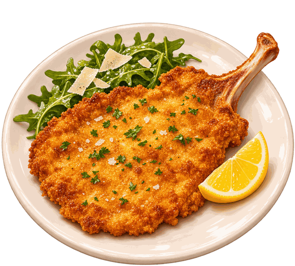

Todas as receitas › Milano
Cidade da viagem: Milano
Costeleta à milanesa
A costeleta à milanesa é uma De.Co. da Prefeitura de Milão desde 2008: com osso e preparada na manteiga.
Porções4
Preparo15 min
Cozimento15 min
DificuldadeFácil
Alérgenos: Glúten, Ovos, Leite

Ingredientes
- Costeletas de vitela com osso, com cerca de 2 cm de espessura · 4
- Ovos · 2
- Farinha de rosca · 150 g
- Manteiga clarificada · 150 g
- Sal · a gosto
- Limão (para servir) · 1
Passo a passo
- Bata levemente a carne deixando o osso e faça dois ou três cortes na borda para que não enrole.
- Passe cada costeleta pelo ovo batido e depois pela farinha de rosca, pressionando bem com as mãos.
- Frite as costeletas na manteiga clarificada bem quente por cerca de 15 minutos, 7-8 de cada lado, até ficarem douradas.
- Escorra em papel absorvente, salgue e sirva com uma fatia de limão.
A dica do chef. A manteiga não deve fritar com força: a costeleta coze devagar e fica macia por dentro. O sal só no fim.
Prepare esta receita também em Tavolata
No jogo você combina ingredientes, completa pedidos e restaura cidades italianas, de Firenze a Milano. Grátis, com receitas verdadeiras no Livro de receitas.
Baixar na App Store